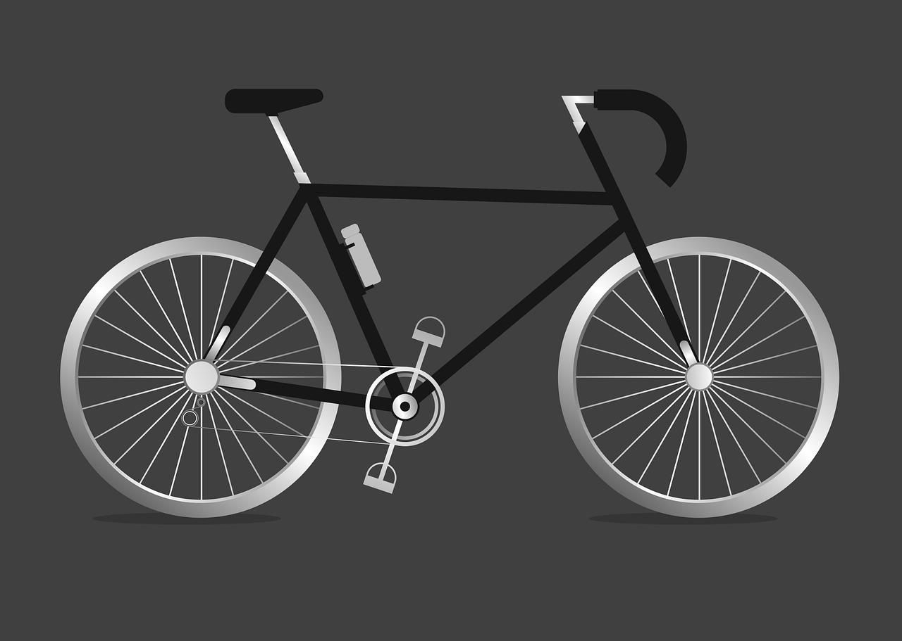

This project applies machine learning to Amazon sales data to solve two key business problems: predicting order totals and classifying order status.
By building and comparing multiple algorithms, the system identifies which models work best for each task—achieving a 99.7% R² score for price predictions and 74.6% accuracy for status classification.
The project includes a complete data processing pipeline and rigorous validation methods to ensure reliable, production-ready models.


This project analyzes animal shelter intake and outcome data to predict the ultimate disposition
of animals entering the shelter system. Using characteristics about animals admitted to an animal center,
the model predicts one of five possible outcomes.

This project analyzes census data extracted from the 1994 Census database to predict whether an individual's annual income exceeds $50,000. The dataset includes demographic information such as age, education level, occupation, work hours, and marital status, making it a widely-used benchmark for classification tasks and fairness-aware machine learning studies.

This project develops predictive models using easily obtainable physical measurements to estimate age, potentially saving significant time and resources in marine biology research and aquaculture management.

In this project I created a scatter plot with a linear regression line within Python. I imported an Excel file within Jupyter and performed data analysis using linear regression. I performed this by using numpy and pandas for data processing and then scikit-learn for building and evaluating a linear regression model.

In this project I created a data project based off of Exploratory Data Analysis aka EDA using Python libraries such as Pandas and Seaborn. I imported an Excel dataset into Jupyter and created multiple visualizations.

In this project I cleaned data, created pivot tables, and created a dashboard in Excel. This show the average income per purchse, customer commute, and customer age bracket with different visulizations for each customer.
In this project I created a dashboard within Microsoft Power BI, to show a data professional survey. I imported an excel data spreadsheet, and created a dashboard showing the count of survey takers, average age of survey takers, country of the survey takers, and more.

This project is to show the amount of CO2 throughout the world. I give a visualization in regards to the amounts along with a key. I started with spreadsheet that needed some data cleaning, and then I cleaned the data and created a pivot table. Finally, I created a Tableau visualization to show the amount of CO2.